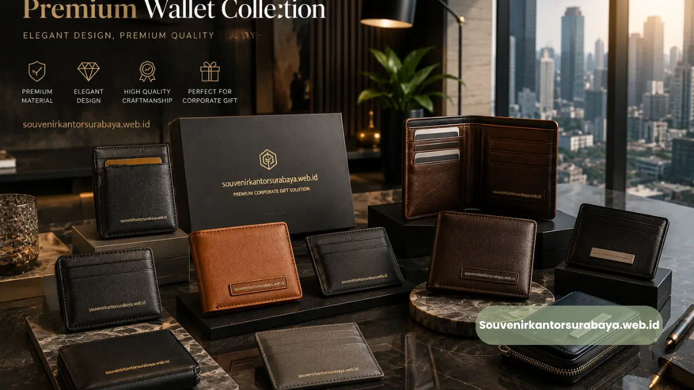
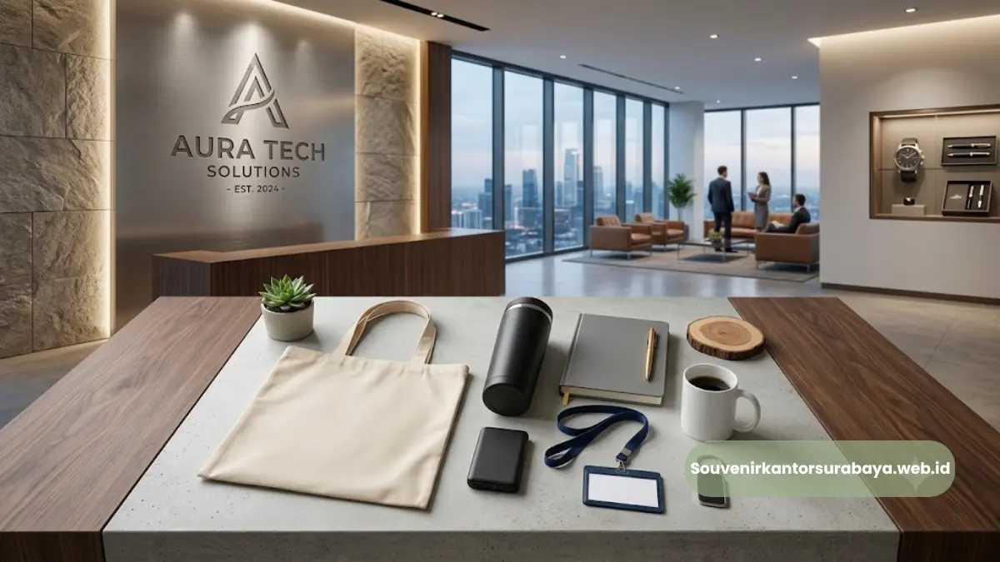

- Apa Itu Dompet Kartu Nama Kulit dan Mengapa Cocok untuk Klien Bisnis?
- Mengapa Dompet Kartu Nama Kulit Jadi Pilihan Souvenir Korporat Favorit di Surabaya?
- Bagaimana Dompet Kartu Nama Kulit Dibuat dan Apa yang Membedakan Kualitasnya?
- Faktor Apa Saja yang Memengaruhi Harga Dompet Kartu Nama Kulit Custom?
- Kesalahan Umum Saat Memilih Souvenir Dompet Kartu Nama untuk Klien Bisnis
- Tips Memaksimalkan Dompet Kartu Nama Kulit sebagai Media Branding Perusahaan
- Perbandingan Dompet Kartu Nama Kulit Asli vs Kulit Sintetis
- Untuk Acara Apa Saja Dompet Kartu Nama Kulit Paling Cocok Digunakan?
- Kesimpulan
Dompet kartu nama kulit adalah souvenir korporat berbahan kulit yang dirancang untuk menyimpan kartu nama secara rapi sekaligus memperkuat citra profesional pemberi maupun penerima.
Produk ini populer sebagai hadiah klien bisnis di Surabaya karena tampilannya elegan, tahan lama, dan mudah dipersonalisasi dengan logo perusahaan.
- Dompet kartu nama kulit cocok untuk souvenir klien, mitra bisnis, dan tamu korporat
- Tersedia pilihan kulit asli dan kulit sintetis premium sesuai anggaran
- Bisa dicustom dengan logo emboss atau cetak nama perusahaan
- Harga dipengaruhi jenis bahan, teknik custom, dan jumlah pemesanan
- souvenir kantor surabaya melayani pemesanan custom untuk kebutuhan korporat di Surabaya dan sekitarnya
Apa Itu Dompet Kartu Nama Kulit dan Mengapa Cocok untuk Klien Bisnis?
Dompet kartu nama kulit adalah aksesori kecil berbahan kulit yang berfungsi menyimpan kartu nama agar tetap rapi, tidak kusut, dan mudah diambil saat pertemuan bisnis.Bentuknya ramping sehingga praktis dibawa di saku jas maupun tas kerja.
Sebagai souvenir korporat, produk ini dipilih karena nilai fungsionalnya tinggi namun tetap terasa personal.
Klien bisnis umumnya menyimpan barang bermanfaat lebih lama dibanding merchandise yang sekadar dekoratif, sehingga dompet kartu nama kulit berpotensi memperpanjang durasi eksposur logo perusahaan.
Selain fungsional, tekstur kulit memberi kesan mewah tanpa perlu desain yang berlebihan. Kombinasi warna netral seperti hitam, coklat tua, atau navy membuat produk ini cocok untuk berbagai jenis industri, mulai dari perbankan, konsultan hukum, hingga perusahaan teknologi.

Mengapa Dompet Kartu Nama Kulit Jadi Pilihan Souvenir Korporat Favorit di Surabaya?
Dompet kartu nama kulit banyak dipilih perusahaan di Surabaya karena memadukan kesan eksklusif, fungsi nyata, dan biaya produksi yang relatif terkendali untuk pemesanan dalam jumlah besar.
Beberapa alasan utamanya:
- Kesan profesional instan. Material kulit secara visual dikaitkan dengan kualitas dan formalitas, cocok diberikan kepada klien korporat maupun mitra strategis.
- Media branding yang halus. Logo yang diemboss pada permukaan kulit terlihat elegan, berbeda dari merchandise dengan sablon logo besar yang terkesan terlalu promosional.
- Daya tahan tinggi. Kulit asli maupun kulit sintetis premium umumnya lebih tahan lama dibanding bahan kanvas atau plastik, sehingga souvenir tetap terpakai dalam jangka panjang.
- Fleksibel untuk berbagai acara. Produk ini relevan untuk gathering klien, seminar korporat, pembukaan kantor cabang, hingga hadiah akhir tahun untuk mitra bisnis.
Karena alasan-alasan tersebut, dompet kartu nama kulit sering masuk daftar prioritas tim procurement saat menyiapkan souvenir untuk tamu penting perusahaan.
Bagaimana Dompet Kartu Nama Kulit Dibuat dan Apa yang Membedakan Kualitasnya?
Kualitas dompet kartu nama kulit ditentukan oleh tiga hal utama: jenis bahan kulit yang digunakan, teknik penjahitan, serta metode finishing pada bagian tepi dan logo.
Secara umum terdapat dua kategori bahan yang dipakai di industri souvenir korporat, yaitu kulit asli (genuine leather atau kulit sapi olahan) dan kulit sintetis premium (PU leather berkualitas tinggi).
Kulit asli menawarkan tekstur alami yang semakin bagus seiring pemakaian, sementara kulit sintetis premium menghadirkan tampilan serupa dengan harga yang lebih terjangkau dan warna yang lebih konsisten.
Teknik penjahitan turut memengaruhi ketahanan produk. Jahitan rapat dengan benang berkualitas membuat dompet tidak mudah terlepas meski sering dibuka-tutup.
Pada bagian finishing, tepi kulit yang dilapisi (edge painting) biasanya terlihat lebih rapi dan tidak mudah mengelupas dibanding tepi yang dibiarkan mentah.
Untuk proses custom logo, dua metode yang umum digunakan adalah emboss (cetak timbul tanpa warna) dan hot stamping (cetak timbul dengan warna emas atau silver).
Kedua metode ini memberikan hasil yang lebih tahan lama dibanding sablon biasa karena logo menyatu dengan permukaan kulit, bukan hanya menempel di atasnya.
Faktor Apa Saja yang Memengaruhi Harga Dompet Kartu Nama Kulit Custom?
Harga dompet kartu nama kulit custom dipengaruhi oleh jenis bahan, teknik personalisasi logo, tingkat kerumitan desain, dan jumlah unit yang dipesan dalam satu kali produksi.
Beberapa faktor yang paling menentukan:
- Jenis bahan kulit. Kulit asli umumnya berada di kisaran harga yang lebih tinggi dibanding kulit sintetis premium karena proses pengolahan bahan baku yang lebih panjang.
- Metode custom logo. Emboss polos biasanya lebih ekonomis dibanding hot stamping warna, karena hot stamping membutuhkan proses tambahan dan material foil.
- Jumlah pemesanan. Semakin banyak unit yang dipesan dalam satu batch produksi, biaya per unit cenderung semakin efisien karena biaya cetakan logo dan setup produksi dapat dibagi ke lebih banyak barang.
- Kemasan tambahan. Penambahan box eksklusif, kartu ucapan, atau paket bundling dengan produk lain (seperti pulpen atau notebook) akan menambah biaya total, namun juga meningkatkan kesan premium saat diserahkan ke klien.
Untuk estimasi harga yang akurat sesuai kebutuhan desain dan jumlah pesanan, tim souvenir kantor surabaya dapat membantu menyusun penawaran custom sesuai anggaran perusahaan Anda.
Kesalahan Umum Saat Memilih Souvenir Dompet Kartu Nama untuk Klien Bisnis
Beberapa kesalahan berikut sering membuat souvenir korporat kurang maksimal meski sudah menghabiskan anggaran yang tidak sedikit.
Kesalahan pertama adalah memilih bahan tanpa mempertimbangkan target penerima. Klien di level eksekutif biasanya lebih menghargai bahan yang terasa premium saat disentuh, sehingga memilih bahan termurah demi menekan biaya justru bisa menurunkan persepsi terhadap perusahaan pemberi.
Kesalahan kedua adalah logo yang terlalu besar atau mencolok. Souvenir korporat idealnya tetap terlihat elegan dan personal, bukan seperti media promosi.
Logo yang proporsional pada satu sisi dompet biasanya lebih disukai dibanding logo besar yang mendominasi seluruh permukaan.
Kesalahan ketiga adalah mengabaikan waktu produksi. Proses custom logo, terutama untuk jumlah besar, membutuhkan waktu produksi tertentu.
Memesan terlalu mepet dengan tanggal acara berisiko membuat souvenir belum siap tepat waktu.
Kesalahan keempat adalah tidak melakukan pengecekan sampel sebelum produksi massal, sehingga potensi kesalahan warna, ukuran logo, atau posisi cetak baru diketahui setelah seluruh unit selesai diproduksi.
Tips Memaksimalkan Dompet Kartu Nama Kulit sebagai Media Branding Perusahaan
Agar dompet kartu nama kulit benar-benar efektif sebagai media branding, perusahaan perlu memperhatikan konsistensi desain, relevansi warna, dan momen pemberian yang tepat.
Pilih warna yang selaras dengan identitas visual perusahaan, misalnya hitam atau navy untuk kesan korporat formal, atau coklat tan untuk kesan hangat dan personal.
Konsistensi warna antar batch produksi juga penting agar kesan profesional tetap terjaga bila souvenir diberikan dalam beberapa gelombang acara.
Posisi logo sebaiknya diletakkan pada sisi depan bagian bawah dengan ukuran proporsional, sehingga tetap terlihat jelas namun tidak mengurangi estetika kulit.
Penambahan nama perusahaan di bawah logo juga dapat membantu penerima mengingat identitas pemberi lebih lama.
Momen pemberian turut memengaruhi kesan yang tertinggal. Menyerahkan souvenir secara langsung dalam pertemuan formal, disertai kemasan rapi, umumnya memberi kesan lebih berharga dibanding sekadar dititipkan tanpa konteks.
Perbandingan Dompet Kartu Nama Kulit Asli vs Kulit Sintetis
Baik kulit asli maupun kulit sintetis premium sama-sama layak dijadikan souvenir korporat, namun keduanya memiliki karakteristik berbeda yang perlu disesuaikan dengan anggaran dan target penerima.
Kulit asli menawarkan tekstur alami yang unik pada setiap lembarnya, serta cenderung menampilkan efek patina atau tampilan yang semakin matang seiring pemakaian.
Karakteristik ini membuatnya cocok untuk souvenir eksekutif atau klien dengan level relasi bisnis yang tinggi.
Kulit sintetis premium menghadirkan tampilan yang lebih seragam antar unit, permukaan lebih tahan terhadap noda cairan, dan umumnya berada pada rentang harga yang lebih terjangkau untuk pemesanan dalam jumlah besar.
Pilihan ini sering dipakai untuk souvenir massal seperti seminar atau gathering dengan jumlah tamu yang banyak.
Pemilihan antara keduanya sebaiknya disesuaikan dengan tujuan acara, jumlah unit yang dibutuhkan, serta anggaran yang tersedia, bukan semata-mata berdasarkan mana yang terlihat lebih mewah di permukaan.
Untuk Acara Apa Saja Dompet Kartu Nama Kulit Paling Cocok Digunakan?
Dompet kartu nama kulit paling cocok digunakan pada acara-acara yang melibatkan pertukaran identitas bisnis secara langsung, seperti seminar korporat, pembukaan kantor cabang, dan gathering tahunan dengan klien maupun mitra strategis.
Pada seminar atau konferensi bisnis, souvenir ini relevan karena peserta biasanya banyak bertukar kartu nama dengan relasi baru, sehingga dompet kartu nama menjadi barang yang benar-benar terpakai sepanjang acara berlangsung.
Pemberian souvenir ini pada momen tersebut juga membantu perusahaan tampil lebih diingat di antara puluhan merchandise lain yang biasanya dibagikan dalam acara sejenis.
Pada acara pembukaan kantor cabang atau peresmian kerja sama baru, dompet kartu nama kulit dapat diberikan sebagai simbol awal hubungan bisnis yang formal.
Sementara pada gathering tahunan, produk ini cocok dijadikan bentuk apresiasi kepada klien dan mitra yang telah menjalin kerja sama sepanjang tahun, sekaligus memperkuat kesan bahwa perusahaan memperhatikan detail dalam setiap relasi bisnisnya.
Bagi perusahaan yang rutin mengadakan acara serupa setiap tahun, menyiapkan stok dompet kartu nama kulit custom dalam jumlah tertentu sejak awal tahun juga dapat membantu proses pengadaan berjalan lebih efisien dibanding memesan mendadak menjelang acara.
Kesimpulan
Dompet kartu nama kulit merupakan pilihan souvenir korporat yang menggabungkan fungsi, kesan profesional, dan daya tahan branding jangka panjang untuk klien bisnis.
Ketepatan memilih bahan, teknik custom logo, dan waktu pemesanan akan menentukan seberapa maksimal produk ini merepresentasikan citra perusahaan Anda.
Jika perusahaan Anda sedang mempersiapkan souvenir untuk klien, mitra bisnis, atau acara korporat mendatang, tim souvenir kantor surabaya siap membantu menyusun desain dompet kartu nama kulit custom sesuai identitas brand dan anggaran perusahaan Anda.
Konsultasikan kebutuhan souvenir korporat Anda sekarang untuk mendapatkan penawaran terbaik.

Hawa Nadira
Tim penulis CorporateGifts ID berfokus pada strategi souvenir kantor, merchandise korporat, dan inovasi brand untuk klien B2B.
Keahlian: Branding perusahaan, produksi souvenir, paket event, desain materi promosi.
Artikel Terkait

Pulpen Parker Ukir Nama Perusahaan
Solusi premium untuk souvenir perusahaan dan hadiah eksklusif.
Baca Selengkapnya
Merchandise Perusahaan untuk Promosi Bisnis
Ide merchandise korporat yang efektif untuk meningkatkan visibilitas brand dan impresi profesional.
Baca Selengkapnya
Ide Souvenir Kantor
Pilihan souvenir kantor dengan sentuhan branding yang membuat acara perusahaan semakin berkesan.
Baca Selengkapnya